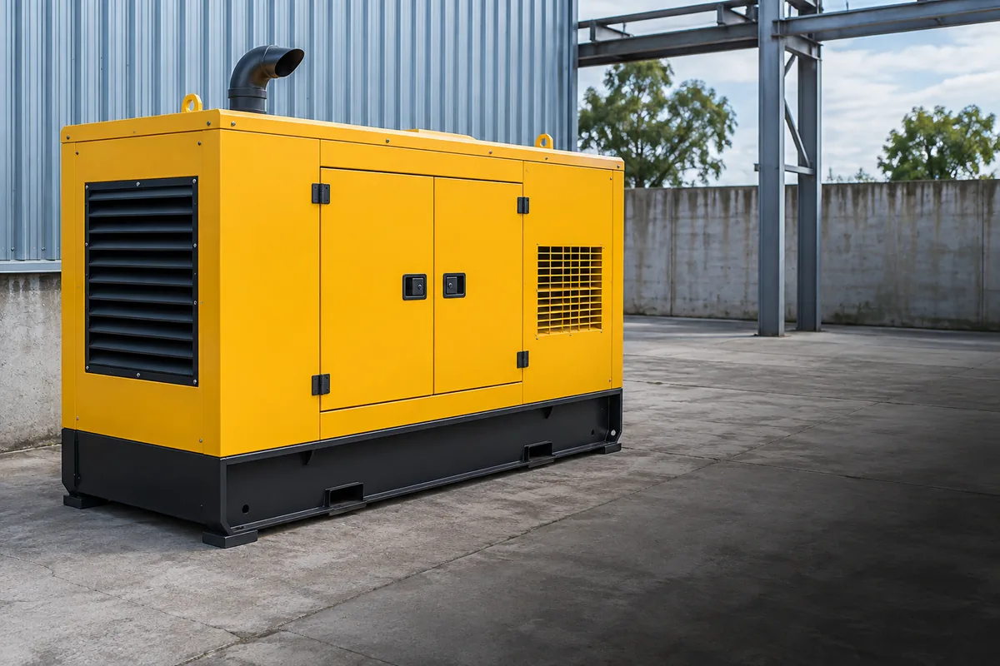
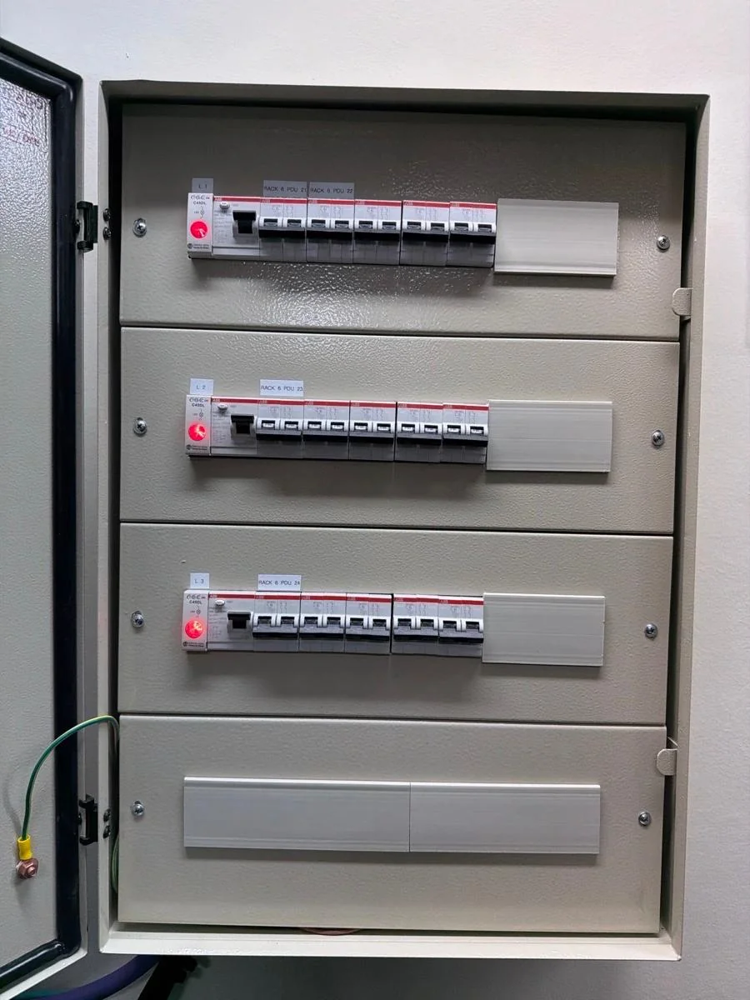

GUÍA 06 · GRUPOS ELECTRÓGENOS
Qué datos reunir para consultar por un grupo electrógeno
Qué contar sobre el equipo, su uso y los avisos que muestra para preparar una consulta de mantenimiento de un grupo electrógeno.
Empezá por acá ↓
Tres datos para empezar.
El grupo electrógeno quedó instalado hace tiempo y ahora querés coordinar un mantenimiento. Quizás en el último corte arrancó y después se detuvo, o apareció un aviso en la pantalla. El historial del equipo y el momento en que ocurrió el cambio ayudan a preparar la consulta.
Podés empezar con tres datos que probablemente ya tengas: qué equipo es, qué necesita respaldar y qué observaste durante el uso habitual. Con eso es más fácil distinguir una visita preventiva de una revisión por un síntoma.
01 / EL EQUIPO
Ubicá los datos del equipo
Buscá la marca y el modelo en el manual, en una factura o en el último informe de servicio. Si el documento indica la potencia nominal o el tipo de combustible, compartí el dato tal como figura, incluida la unidad. Si no lo encontrás, una descripción general sirve para iniciar la consulta.
Indicá si el grupo es fijo o portátil y cuántos años lleva instalado, aunque sea de manera aproximada. Cuando ya exista un informe de mantenimiento, es útil mencionar la fecha y qué tareas se registraron. Podés ocultar datos de facturación o cualquier información que no haga falta para consultar.
Identificación
Marca, modelo y potencia que indica la ficha del equipo.
Instalación
Tipo de inmueble, localidad y si el equipo es fijo o portátil.
Historial
Antigüedad aproximada y fecha del último servicio, si la conocés.
02 / EL USO
Contá qué necesita respaldar
En una vivienda puede alcanzar con describir qué querés sostener durante un corte. En un comercio, indicá si la prioridad es la iluminación, una heladera, las cajas u otro equipo. Cuando una interrupción afecta una tarea que no se puede detener, mencioná esa prioridad desde el primer contacto.
Si contás con registros de uso, decí si suele entrar solo cuando hay cortes, si se hacen controles periódicos o si estuvo un tiempo sin utilizarse. Cualquier cambio reciente, como la incorporación de otro equipo al inmueble, da contexto para acordar qué debe revisar el profesional.

03 / LO QUE OBSERVASTE
Reconstruí lo que pasó
Si hubo una falla, contá cuándo se observó y en qué contexto. «En el corte del martes arrancó y se detuvo unos minutos después» ubica mejor el problema que «no funciona». Si ya tomaste nota de un aviso, transcribilo tal como apareció y agregá si quedó registrado en el visor o en un informe.
También sirve mencionar qué ocurrió antes o después del episodio, por ejemplo, si hubo una visita técnica reciente o si el equipo llevaba semanas sin utilizarse. La causa y el alcance del trabajo requieren una evaluación.
Para una visita prevista
Compartí el historial y preguntá qué abarca el servicio para ese modelo.
Para una falla observada
Describí la secuencia y preguntá cómo se evalúa antes de presupuestar una reparación.
04 / ANTES DE CONSULTAR
Prepará el mensaje y la visita
Podés enviar algo así: «Tenemos un grupo fijo en un comercio de [localidad]. En el último corte arrancó y después se detuvo. Tengo el modelo y el informe del último mantenimiento. Queremos saber si pueden revisar el equipo y qué incluye esa evaluación».
Antes de coordinar, aclarales si hay acceso restringido, horarios de atención o equipos que no pueden quedar fuera de servicio. Preguntá si la evaluación podría requerir una interrupción y cómo se coordinaría con quien opera el establecimiento.
Qué compartir en el primer mensaje
- Inmueble y localidad
Vivienda, comercio o edificio, y zona de trabajo.
- Datos del grupo
Modelo, antigüedad aproximada y último mantenimiento.
- Motivo de la consulta
Visita preventiva, aviso o cambio en el funcionamiento.
05 / SEGURIDAD
Qué evitar al revisar
Para reunir datos usá documentación, informes y registros que ya estén disponibles. Dejá cualquier inspección del tablero, conexión o prueba de arranque a cargo de un profesional. Los generadores portátiles a combustible deben usarse al aire libre y alejados de puertas, ventanas y otras aberturas: los gases de escape pueden contener monóxido de carbono. Recomendaciones sobre generadores portátiles de la CPSC.
Preguntas frecuentes
¿Puedo consultar si no sé el modelo?
Sí. Indicá qué tipo de grupo tenés, en qué localidad está y qué necesitás resolver. El manual o un informe anterior pueden aportar el modelo después.
¿Necesito calcular la potencia antes de escribir?
Podés compartir la potencia indicada en la ficha, si la encontrás, y la lista de equipos que necesitan respaldo. El dimensionamiento le corresponde a quien evalúe la instalación.
¿Hace falta volver a encenderlo para registrar una falla?
No. Contá lo que ya observaste y compartí cualquier registro disponible. El profesional podrá indicar qué comprobaciones corresponden.
DE LA GUÍA A LA CONSULTA
¿Querés consultar por tu grupo electrógeno?
Contale a JM Eléctric dónde está, qué equipo tenés y si querés coordinar mantenimiento o revisar un cambio en su funcionamiento.
CABA y alrededores · Cobertura a confirmar